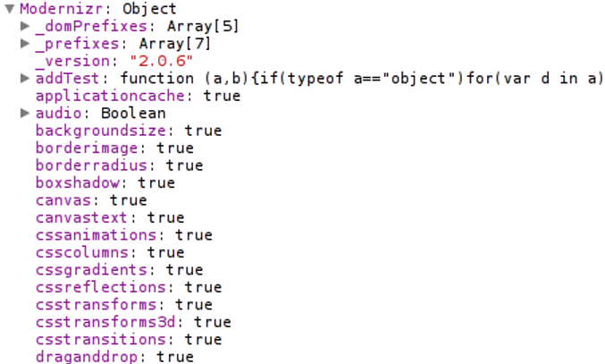

| Form Controls | → | UI libraries (YUI, jQueryUI, ExtJS) |
| Drag 'n drop | → | jQuery.fn.draggable() |
| CSS transitions | → | animate() |
|
border-radius
box-shadow backgorund gradients |
→ | Grosse Hintergrundbilder |
| localStorage | → | cookies |
<meta http-equiv="X-UA-Compatible" content="IE=Edge,chrome=1">
- html5douche
<html class="js flexbox canvas canvastext webgl no-touch
geolocation postmessage websqldatabase indexeddb hashchange
history draganddrop websockets rgba hsla multiplebgs backgroundsize
borderimage borderradius boxshadow textshadow opacity cssanimations
csscolumns cssgradients cssreflections csstransforms csstransforms3d
csstransitions fontface generatedcontent video audio localstorage
sessionstorage webworkers applicationcache svg inlinesvg smil
svgclippaths" lang="en">

.csscolumns ol.features {
-moz-column-count: 2;
-webkit-columns: 2;
-o-columns: 2;
columns: 2;
}
.no-csscolumns ol.features {
float: left;
margin: 0 0 20px;
}
.no-csscolumns ol.features li {
float: left;
width: 180px;
}
if(Modernizr.geolocation){
navigator.geolocation.getCurrentPosition(success, error);
}else{
getIPLocation(success, error);
}